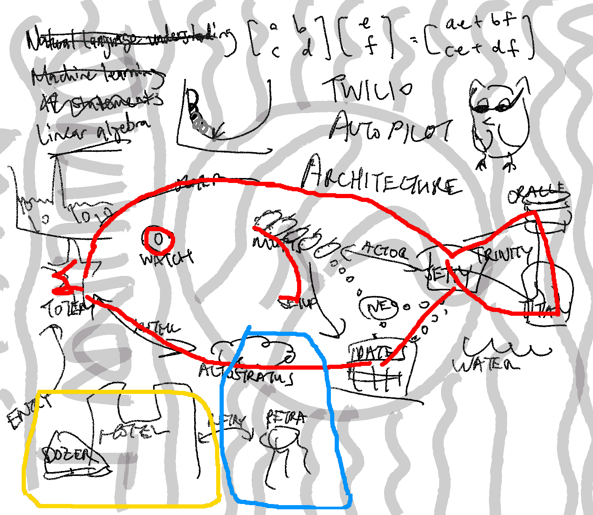

♫ The server's on fire ♫
Your peaceful dream is interrupted by the sound of your pager going off. Should've unplugged this weekend, you think to yourself. You look at the message: Come to the office immediately - hard to explain over text. Ugh. Must be important.
You enter the office to find it in total disarray. One of the Autopilot team members fills you in. She says,
"This morning all of Twilio Autopilot stopped working. Instead of the usual output, we only got a few cryptic lines instead, like the computer is hiding something from us. You have to help us fix it."
"Whoa," you say. "I'm unfamiliar with this system, I don't even know the possible vectors of failure. Can you give me a high-level overview?"
She fumbles around looking for something to write on, and settles for taking one of the corporate posters off the wall. You catch a glimpse of a circle around an outstretched hand as she flips it over and starts to write and talk.
"Since Autopilot is a natural language understanding project, we tried something unusual here. Where a normal machine learning algorithm uses scalars, we work directly on the words instead. Otherwise it's a fairly standard ML thing, you know, gradient descent, adding lo amounts of noise to avoid overfitting, and some linear algebra with letters. As for the implementation details..."
As you ponder these ideas, she continues to scribble words and connect lines on her poster, occasionally switching colors. She accelerates in her explanation, not noticing your lack of attention. Suddenly you focus again on what she is saying:
"...pathetic outdated bitrates, Peter got Jetty on Titan, after --"

"Okay, thanks, I think I've got what I need," you say quickly, before the diagram can get even worse somehow. What is it about ML engineers and having basically no commutativity skills? Is that a fish? You shake your head and try to focus.
"Let's step back from all this confusion for a moment. We can't even replicate the error yet. If we can find an input that causes the same failure, maybe we can inspect it to learn more. Can you show me what the output was?" you ask.
She points you towards a nearby laptop. You see on the screen:
| An old flame (now deceased) was just Leslie's type | ||
| Creative person mixes up round-trip time with an ISO-646 predecessor, I see | ||
| Electronic filter that rejects only Swiss frequencies | ||
| Greater than great man returns in "Soul Train" (1971) | ||
| Losing after self-referential puzzle renders Mac an award, so I hear | ||
| More than one farewell interrupted by a couple of afternoon nibbles | ||
| Securely transmitted Office Space report about height | ||
| Wild animal attack sends former Twilio CTO to critical care |